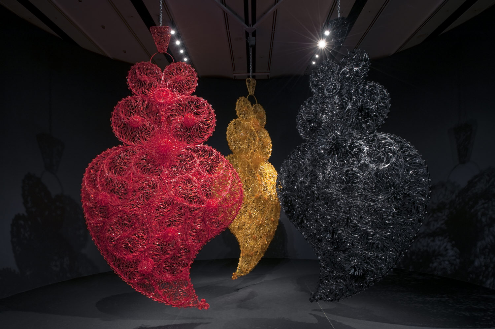
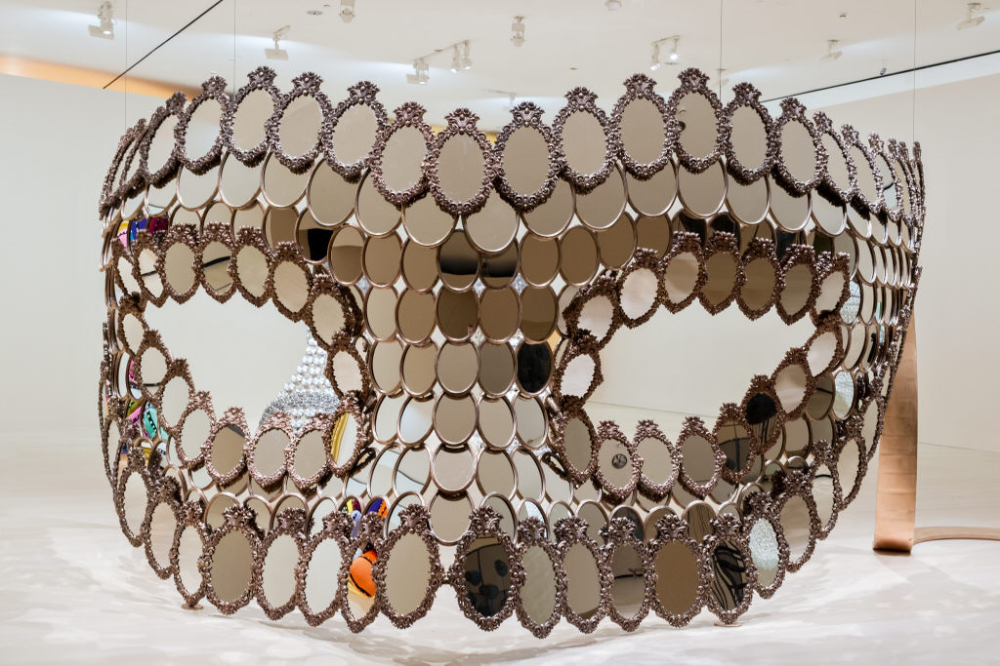

A primeira mulher e a mais jovem artista a expor no Palácio de Versalhes.
Imagens de duas das suas obras.
 | Coleções | ||
|---|---|---|
| Coleções Públicas | Coleções Privadas | Países de algumas coleções |
| Caixa Geral de Depósitos, Lisboa | MUSAC, Leão, Espanha | Portugal |
| Espanha | ||
| França | ||
| Pinault Collection, Paris e Veneza | Dinamarca |